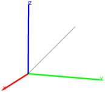
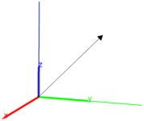

25.12.2 Translation in space
See Section
24.14.2
for translations in the plane.
The
translation
command creates a translation.
translation
takes one mandatory argument and one optional argument:
v
, the translation vector, which can be given as a vector or a list of coordinates.
Optionally,
G
, a geometric object.
translation(
v
)
returns a new command which translates by
v
.
translation(
v
,
G
)
returns and draws the translation
G
by the vector
v
.
Examples
t
:=
translation
([1,1,1]);
S
:=
sphere
([0,0,0],0.5);
color
(
S
,
blue
),
t
(
S
)

translation
([1,1,1],
S
)
